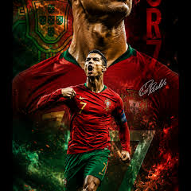

My favourite football player is, Ronaldo.
He is the most liked player by many of the people all around the world, including me.
I am one of the RONALDO'S
Ronaldo had played from;
1- Sporting CP
2002–2003 · Portugal 🇵🇹
2. Manchester United
2003–2009 and 2021–2022 · England
3. Real Madrid
2009–2018 · Spain 🇪🇸
4. Juventus
2018–2021 · Italy 🇮🇹
5. Al-Nassr
2023–present · Saudi Arabia 🇸🇦
in his past.
Ronaldo's national team is;
Portugal national team 🇵🇹
2003–present in his recorded international career
Ronaldo will always a GOAT ( Greatest Of All Time ) for his true fans. I hope, Ronaldo may won a worldcup in his whole journey.
